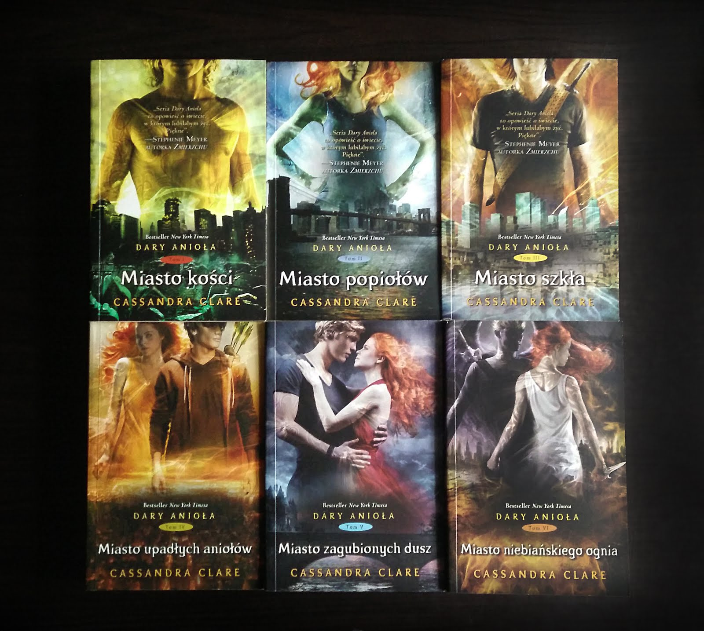
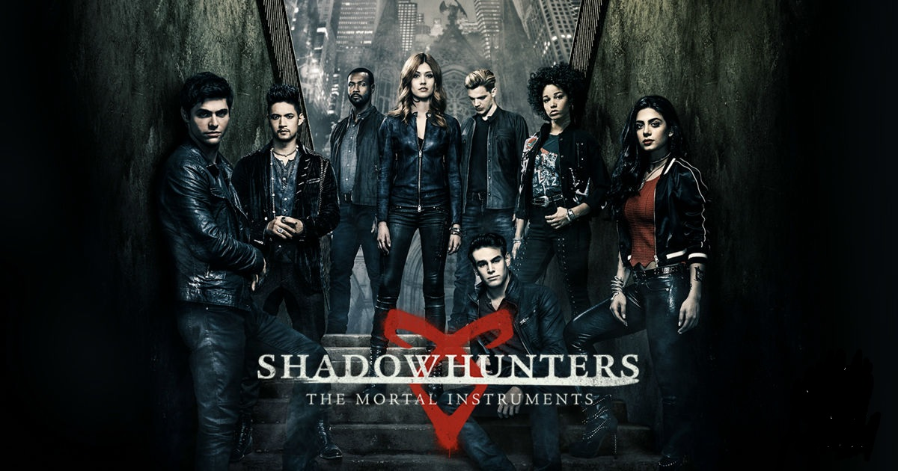
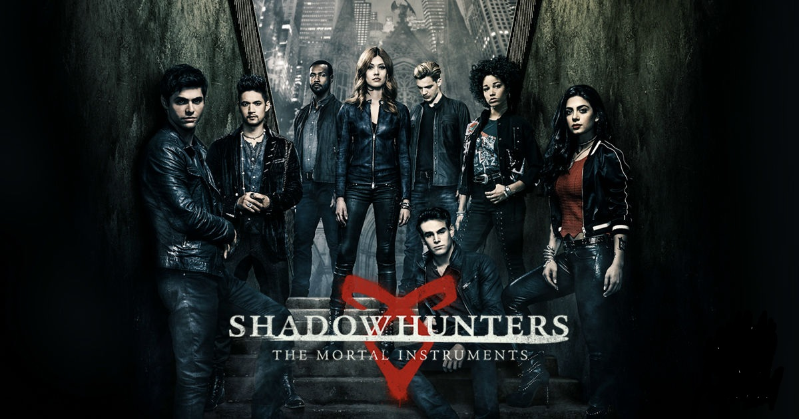

Seria Dary Anioła
Autorką sześciu części książek jest Cassandra Clare
Ciekawy fakt:
Na podstawie tej serii powstał Serial opowiadający o histori głównych bohaterów, pod tytułem "Shadowhunters".

Autorką sześciu części książek jest Cassandra Clare
Ciekawy fakt:
Na podstawie tej serii powstał Serial opowiadający o histori głównych bohaterów, pod tytułem "Shadowhunters".
